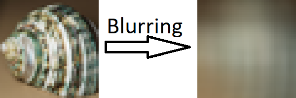

What is Blurring?
Blurring is the process of making an image unclear so that you cannot tell what it shows. This can be to different extents because sometimes blurs are just used so that you cannot read some text for example on number plates on TV, whereas other times they are used to make an entire object undistinguishable for example to hide some profane symbol. Blurs have also become used to preprosses an image before an AI analyses it for objects, this is done because a very low power blur can remove random noise from an image without affecting the object being analysed to much.
Blurs work by taking an average of the surrounding pixels, how this average works affects how the blur will look, aswell as what pixels it looks at.
How to use the tool
The Method drop down menu allows you to change the algorithm which performs the blur.
The input file textbox and button, when you click the button it will bring up file explorer where you can pick an image file to blur, you may need to change what file type you are looking for.
The power textbox allows you input a number which is used in the gamma correction. This will take each pixel and raise to this specified power then the blur will be performed over these altered numbers, then each of these values will then be stored in the final image as the power's root of that value. This is generally done because very bright values can only be stored as 255 in each colour but if the blur was done by a lens in real life then it would light up the surrounding pixels this is an ettempt to emulate that phenomena.
If the whole image radio button is selected then the entire image will be blurred by the algorithm.
If the area in image radio button is selected then only part of the image will be blurred by the algorithm, you can move round the area by using the controls of Horizontal and Vertical, you can also change the size of the area to blur by using the Width and Height controls, with both sets of controls you can increase the amount the change the area by pressing control, shift or both at the same time. If the Ellipse checkbox is checked then the area to be blurred is an ellipse, otherwise it is a rectangle. If the inverted checkbox is checked then the area selected will be the only part of the image which is not blurred.
The blur button when clicked runs the algorithm according to the prior selected parameters
The show original button will display the unblurred image inside of the program.
The show blurred button will display the blurred image inside of the program.
The output filename textbox is where you should type in what you want the blurred image to be saved as, it will be saved at the same location as the input file.